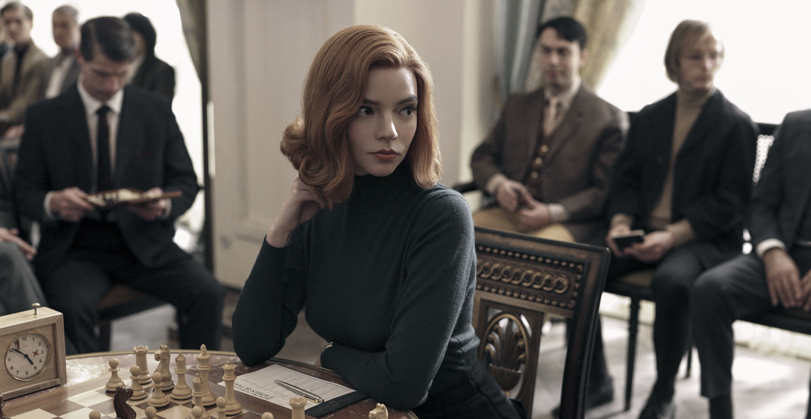
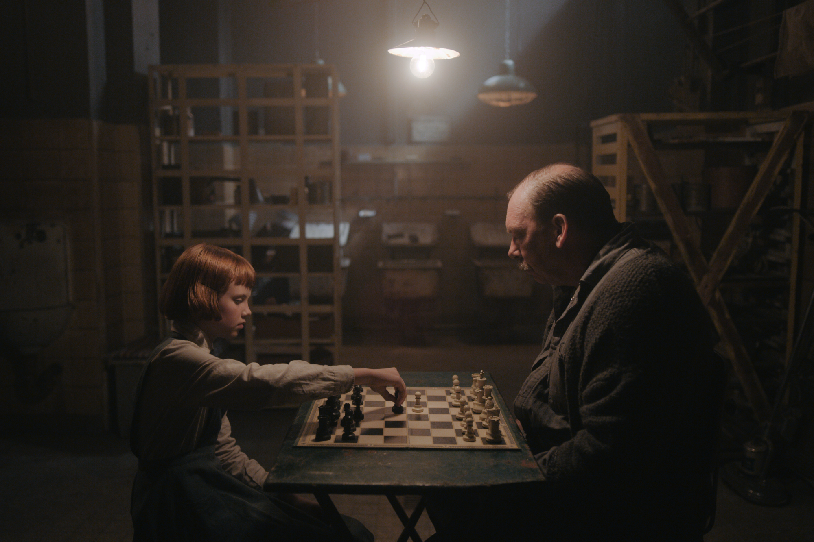

The Queen's Gambit
Orphaned at the tender age of nine, prodigious introvert Beth Harmon discovers and masters the game of chess in 1960s USA. But child stardom comes at a price.



Orphaned at the tender age of nine, prodigious introvert Beth Harmon discovers and masters the game of chess in 1960s USA. But child stardom comes at a price.
After her mother dies in a car accident nine-year-old Beth Harmon is sent to an orphanage. A shy, withdrawn girl she finds a purpose when the school janitor teaches her to play chess. She demonstrates a prodigious talent for the game and is soon competing at a very high level. However, she has also developed a drug addiction as this seems to help her play. She seems set on a path for fame...and self-destruction.
Nine year-old orphan Beth Harmon is quiet, sullen, and by all appearances unremarkable. That is, until she plays her first game of chess. Her senses grow sharper, her thinking clearer, and for the first time in her life she feels herself fully in control. By the age of sixteen, she's competing for the U.S. Open championship. But as Beth hones her skills on the professional circuit, the stakes get higher, her isolation grows more frightening, and the thought of escape becomes all the more tempting. Based on the book by Walter Tevis. More info...
Unlike a majority of movies and television shows depicting chess boards, the chess boards are always set up correctly in this series and the chess games and positions are realistic. National Master Bruce Pandolfini and Grandmaster Garry Kasparov acted as consultants for this series.
In autumn 2020, multiple news outlets (including the New York Times, NPR, FOX Business, CNN, Forbes, Variety, and many others) reported that due to the popularity of this series, sales of chess sets had skyrocketed and interest in learning the game had greatly increased.
It took writer and producer Allan Scott about thirty years to get this show into production. During that time, he rewrote the story nine times and approached several studios. Each studio rejected the show, as they believed that nobody would be interested in chess. Ironically, this show became the most viewed show on Netflix, attracting over 62 million viewers worldwide within a month after its debut.
Mr. Shaibel gives Elizabeth a book titled 'Modern Chess Openings'. Usually called MCO, this book was written by Richard Clewin Griffith and John Herbert White and first published in 1911. It has since seen 15 editions, and has been described as the 'first scientific study of the openings in the twentieth century'.